| Home | | Week 1 | | Week 2 | | Week 3 | | Week 4 |
Week 3
1. Laser Cutter: Introduction
2. Assignment: Using Laser cutter
2. Antimony 2D and 3D Design: Introduction
3. Assignment: Designing using Antimony
1. Laser Cutter: Introduction
Laser cutter is a brilliant machine. FabLab Kochi is equipped with a Trotec Speedy 100 CO2 laser cutter and engraver. Laser cutter is capable of cutting and engraving on a wide range of materials.
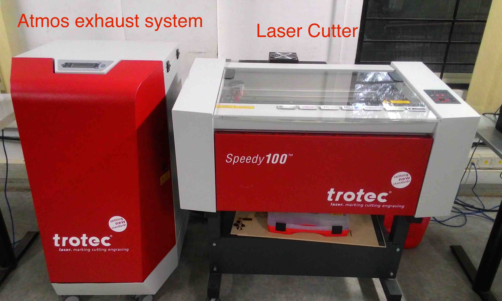
The laser cutter is mated with an atmos exhaust chamber which is capable of absorbing smoke/fumes that arise during cutting and engraving.
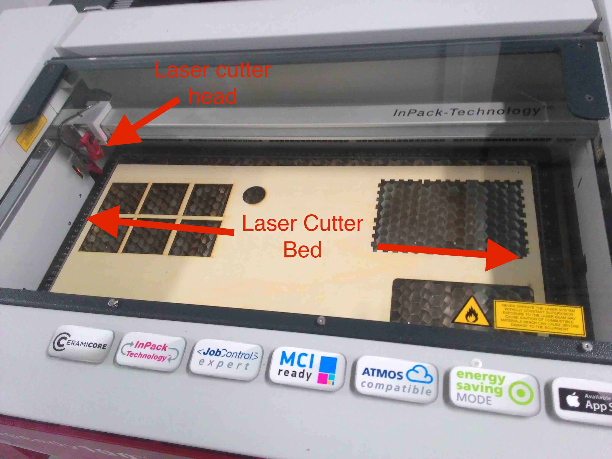
The laser cutter in our FabLab is capable of cutting soft materials like wood, acrylic, card board, paper, fabric etc. It is also capable engraving on tuff materials like steel, brass, tile etc.
The basic training on using the laser cutter was provided to me by the Trotec company representatives when they setup the laser cutter at this FabLab.
Focusing laser head
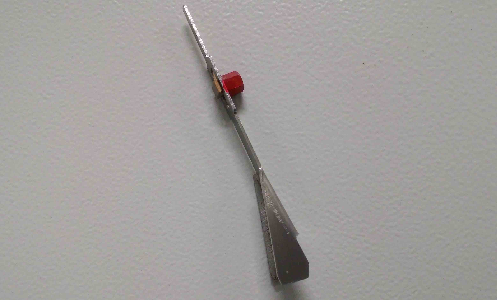
The head of the laser needs to be focused depending upon the kind and thickness of the material used. Focussing is made possible with the focus tool shown in the picture above. This tool is hanged fon the head and the bed is moved closer to the head using arrow keys on laser cutter till the tool touches the material in the bed and falls down.

Once the tool is fallen down, The current position is said to be the optimal focus position for that material in the bed. Once the focus is right, the user can proceed with cutting or engraving.
The machine cuts and engraves based on its speed to power ratio.
- Cutting can be performed by setting high power and slow speed.
- Engraving can be performed by setting low power and high speed.
2. Assignment: Using Laser Cutter
Assignment was to design a simple 2d design in rhino and to engrave it on a wooden board using laser cutter.
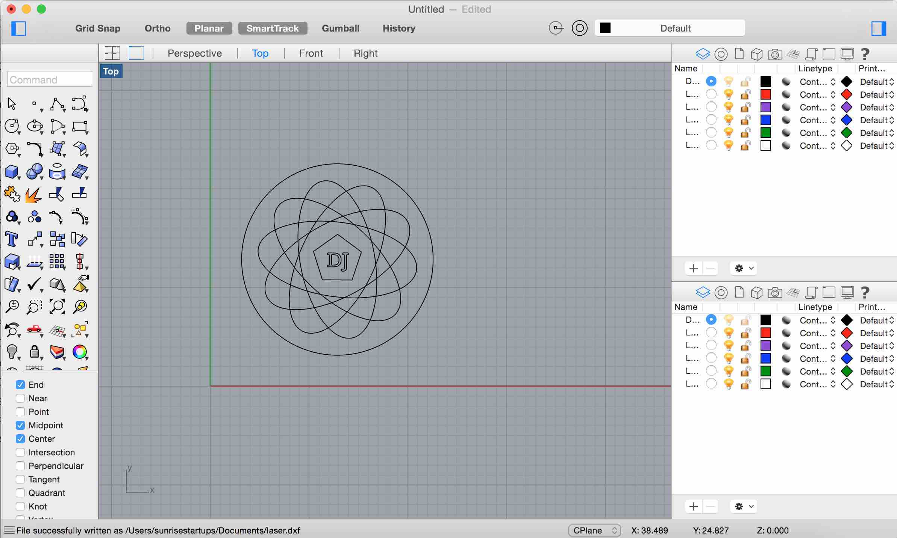
I used rhino to create an indian rangoli kind of design with the letters 'DJ' in the center. This was created by making an ellipse and make a polar arry with it. I added a polygon on the center of the ellipse and added a text 'DJ' to it. I saved it as a jpeg and my design was ready for print.
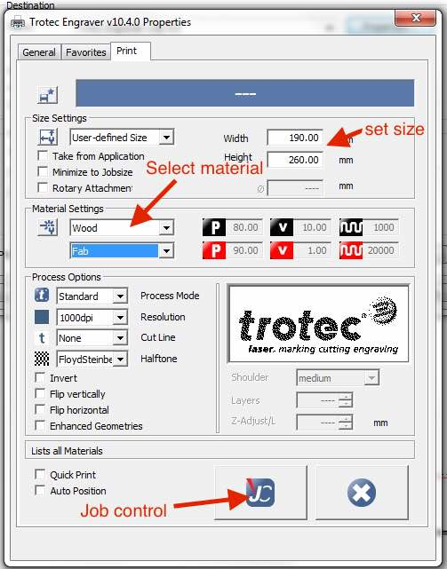
Since the laser cutter was already installed on the system I was using. I just needed to click print option from the Rhino and selected trotec engraver.
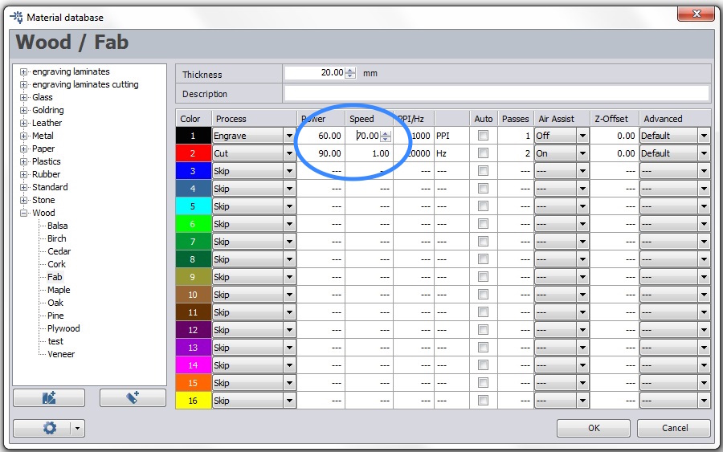
In the engraving properties I set power 60 and speed 70. I made a seperate file with circle alone in red colour which will be used for cutting the design. I set the power as 90 and speed as 1.
In the properties, select the material and select the size. Clicking on the JC button will take us to the Job Control where the position of the head can be setup.
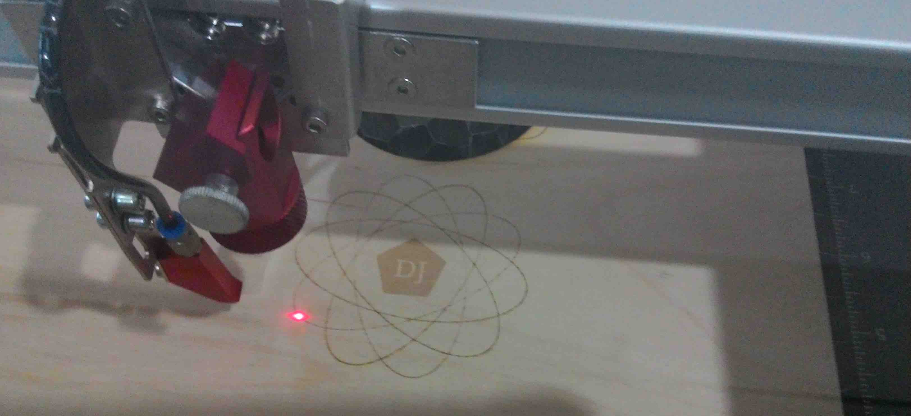
Once its done, I placed the wooden sheet on the bed and sticked the edges with masking tape.I set the focus using the focus tool(method explained above).
I gave the print command in rhino. It hardly took around two minutes to engrave and around 15 seconds to cut the design.
The final product:
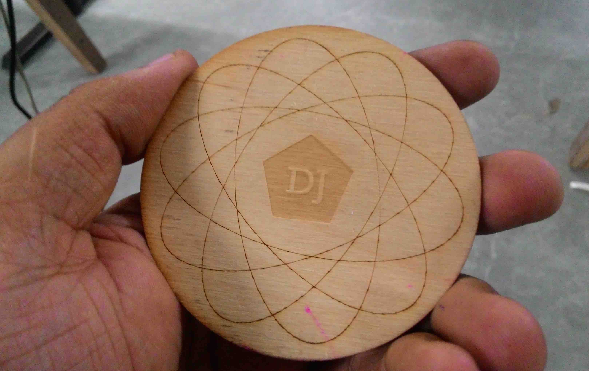
Download sticker design file: lasercut.png
{kind=link}
Back to top
3. Antimony: Introduction
Francisco introduced us to Antimony.Antimony is CAD software developd by Matt Keeter for making 3D design. This the one of the most interesting and simple software I learned using the PreFab course.
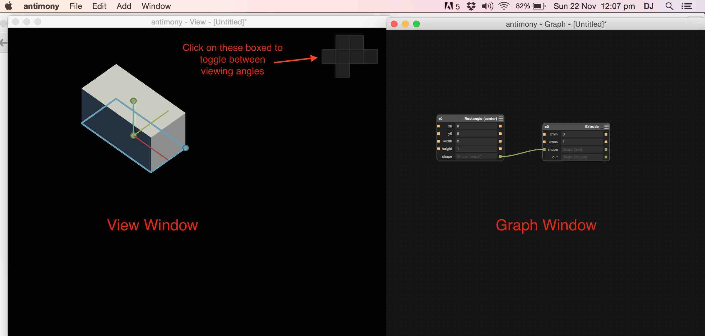
Antimony has two windows, the view window and the graph window. View window shows the design in various angles and the graph window shows the list of 2D, 3D components that are inter-connected to make the final design.
Installation of Antimony is fairly simple. I downloaded Antimony for Matt Keeter github page(link below)
https://github.com/mkeeter/antimony
I downloaded the .dmg file and installed it like installing any other software on mac.
How Anitmony works:
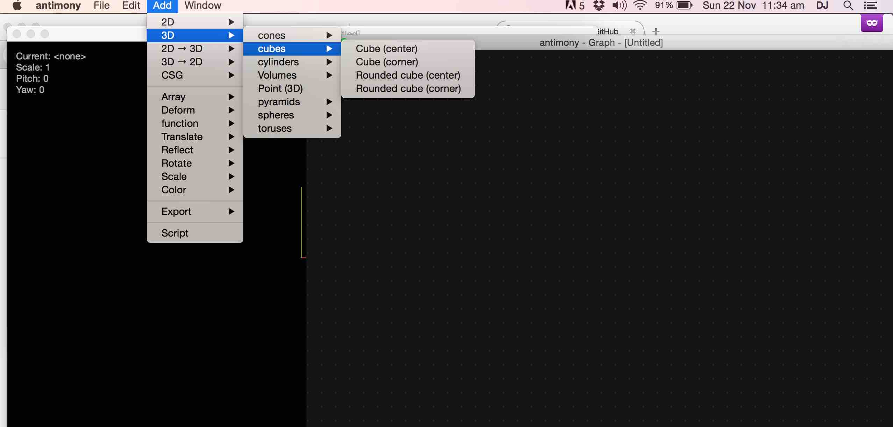
- Various preset 3D and 3D drawings can be added to the graph by selecting from a drop down list.
- Their properties like dimension, xyz position can be changed in the graph..
- Various changes like extrude, 2D to 3D etc can be applied on them..
- Then different drawings can be interconnected in the graph. .
- Union, difference, copy etc. can also be performed on them..
- Everything is done through the graph and the changes takes effect in the real time view. .
Back to top
3. Assignment: Designing using Antimony
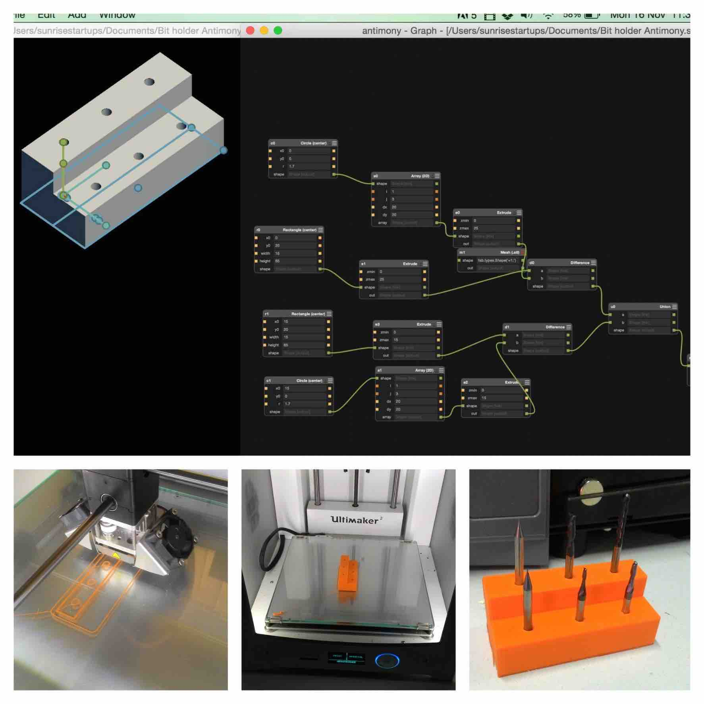
I played around with a few trial designs first. The assignment was to desing in Antimony and create something useful for FabLab. I decided to design and 3D print and stand for holding Roland Modella milling bits.
These are the steps I followed on the graph to make that happen:
- Created a rectangle with width 15 and height 65.
- Extruded the rectangle at max 25 (this made it a 3D object)
- Created a circle with radius 1.7
- Made 1/3 2D array of this circle with dx and dy 20 so that the three circles are placed on the entre for the rectangle
- Extruded the circle but setting max: 25 (circles became cylinders now)
- Made a difference between the extruded rectangle and extruded circle.
- Made another rectangle in x0: 15 and y0: 25 and made three more circles with radius 1.7
- Repeated the steps done with the first set of circles and rectangle(extrude and difference)
- Finally did a union on two sets of circles and rectangles and the final design was ready
- Add "Export" in graph. Exported it in .stl format.
The .stl file was converted to GCODE using CURA and then it was 3D printed using Ultimaker 2.
Download the design file: bitholder_antimony_final.stl